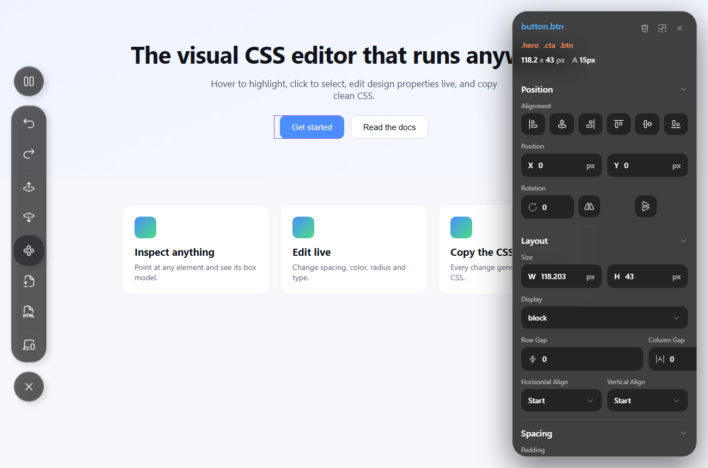

The visual CSS editor that lives on the page.
Hover to highlight, click to select, edit spacing, color, gradients and type live — then copy clean CSS or an AI prompt.

Try it on real components.
Everything below is a normal DOM element. Point at any of it with the toolbar, tweak it, and watch the CSS update — gradients and images included.
Solid, linear and even a conic gradient — all live-editable fills.
Ag
- Unlimited elements
- Copy real CSS
- AI prompt export
A real inspector, not a color picker.
Everything you'd reach for in a design tool — mapped straight onto live CSS.
Inspect the box model
Hover anything to see its size, padding, margin and fonts. Walk up to the parent or down to a child in one click.
Edit live, drag to scrub
Every number is draggable. Change spacing, radius, rotation and type and the page responds instantly.
Multi-layer fills & gradients
Stack solids, linear gradients and images like a design tool — and edit gradients that already exist on the page.
Copy CSS or an AI prompt
Every change is logged. Export clean CSS to paste into your codebase, or a prompt that tells any AI exactly what to change.
From hover to shipped CSS.
Point & pick
Move over the page — elements light up with their dimensions. Click to open the property panel.
Edit visually
Adjust layout, spacing, color, gradients and type with fields that feel like a design tool.
Copy & ship
Grab the generated CSS or an AI prompt and drop it straight into your project.
Edit any website, right now.
The toolbar is already on this page. Pick an element and start changing things — nothing to install.
Pick an element ↖